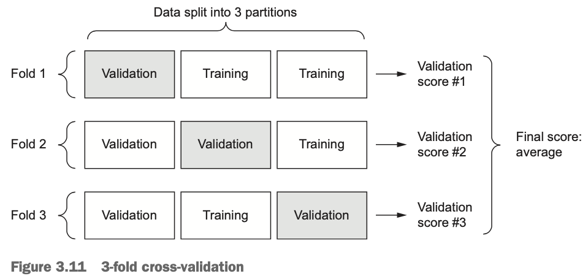

Validação de DadosImportância da Validação de Dados em Redes Neurais e Aprendizado de Máquina1. Por que Validar Dados? O que Acontece se Não Fizermos Isso?Problemas que Podem Ocorrer sem Validação de Dados2. Principais Métodos de Validação de Dados3. Referências BibliográficasResumoScript Exemplo de Validação de DadosTécnicas de Validação Cruzada Adequadas1. Stratified K-Fold2. Stratified Shuffle Split 3. Leave One Out (LOO) Comparações & RecomendaçõesRecomendações adicionaisTratamento de Valores InválidosExemplo de Saída de Relatório
A validação de dados é uma etapa crítica no desenvolvimento de modelos de machine learning e redes neurais. Ignorá-la pode levar a resultados enganosos, modelos imprecisos e até mesmo falhas em produção.
Viés no Modelo (Bias)
0, 1, 2, "sim", o modelo pode interpretar incorretamente as classes. Overfitting em Dados Sujos
Falhas Silenciosas (Silent Failures)
Problemas de Escalonamento (Feature Scaling Issues)
"1000" vs. 0.001) podem prejudicar a convergência do gradiente descendente. Vazamento de Dados (Data Leakage)
Problemas em Produção
| Método | Descrição | Quando Usar |
|---|---|---|
| Validação Manual | Inspeção visual dos dados para detectar anomalias. | Pequenos datasets. |
| Validação por Esquema (Schema Validation) | Define regras (e.g., coluna_X deve ser float entre 0 e 1). | Dados tabulares (Excel, CSV). |
| Validação Cruzada (Cross-Validation) | Divide os dados em subconjuntos (folds) para evitar overfitting (e.g., StratifiedKFold). | Modelos de classificação. |
| Detecção de Outliers | Usa métodos estatísticos (Z-Score, IQR) ou ML (Isolation Forest). | Dados numéricos. |
| Tratamento de Valores Faltantes | Remove ou cria (mean, median, KNNImputer) valores ausentes. | Quando há "NaNs" (entradas vazias). |
| One-Hot Encoding / Label Encoding | Converte categorias em números (evita strings em redes neurais). | Dados categóricos. |
Eventualmente você queria se informar sobre "Data Food" e "Data Folding"
A validação de dados é essencial para garantir que:
Ignorar essa etapa pode levar a modelos que falham silenciosamente, causando prejuízos em aplicações reais. A combinação de validação estatística + checagem programática (como no script Python exemplificado maix abaixo) é a melhor prática para evitar esses problemas.
Suponha que se queria validar Dados para Redes Neurais com Tratamento de Erros
A idéia é criar uma solução robusta que:
Segue código exemplo:
ximport pandas as pdimport numpy as npfrom sklearn.model_selection import StratifiedKFoldfrom keras.models import Sequentialfrom keras.layers import Densedef validate_binary_data(df, binary_columns): """ Valida colunas que devem conter apenas dados binários (0/1) Retorna um relatório de problemas encontrados """ problems = {} for col in binary_columns: if col not in df.columns: problems[col] = {'error': 'Coluna não encontrada'} continue # Verifica valores únicos unique_values = df[col].dropna().unique() non_binary = [v for v in unique_values if v not in [0, 1]] if non_binary: # Encontra as linhas com problemas problematic_rows = df[df[col].isin(non_binary)].index.tolist() problems[col] = { 'non_binary_values': non_binary, 'problematic_rows': problematic_rows, 'count': len(problematic_rows) } return problemsdef clean_data(df, input_columns, output_column, binary_columns): """ Limpa os dados substituindo valores inválidos por NaN """ df_clean = df.copy() # 1. Verificar colunas binárias problems = validate_binary_data(df_clean, binary_columns) # 2. Substituir valores não-binários por NaN nas colunas binárias for col, issue in problems.items(): if 'non_binary_values' in issue: for val in issue['non_binary_values']: df_clean[col] = df_clean[col].replace(val, np.nan) # 3. Verificar outras colunas numéricas for col in input_columns: if col not in binary_columns: # Converter para numérico, strings inválidas viram NaN df_clean[col] = pd.to_numeric(df_clean[col], errors='coerce') return df_clean, problems# Exemplo de uso:input_columns = ['Temperatura', 'Umidade', 'Pressao', 'VelocidadeVento', 'Precipitacao']output_column = 'AlertaTempestade'binary_columns = [output_column] # Lista de colunas que devem ser binárias# Carregar dadostry: df = pd.read_excel('dados_treinamento.xlsx') # Arquivo com alguns erros propositaisexcept Exception as e: print(f"Erro ao ler arquivo: {str(e)}") exit()# Validar e limpar dadosdf_clean, problems = clean_data(df, input_columns, output_column, binary_columns)# Gerar relatório de problemasprint("\n=== RELATÓRIO DE PROBLEMAS ENCONTRADOS ===")for col, issue in problems.items(): print(f"\nColuna '{col}':") if 'error' in issue: print(f" - ERRO: {issue['error']}") else: print(f" - Valores não-binários encontrados: {issue['non_binary_values']}") print(f" - Número de células problemáticas: {issue['count']}") print(f" - Linhas com problemas: {issue['problematic_rows']}") # Opcional: Mostrar valores originais das células problemáticas print("\n Exemplos de valores problemáticos:") for row in issue['problematic_rows'][:3]: # Mostra até 3 exemplos print(f" Linha {row}: Valor = {df.loc[row, col]}")# Remover linhas com valores nulos (opcional)initial_count = len(df_clean)df_clean = df_clean.dropna(subset=input_columns + [output_column])final_count = len(df_clean)print(f"\nTotal de linhas removidas por dados inválidos: {initial_count - final_count}")# Preparar dados para a rede neuralX = df_clean[input_columns].valuesy = df_clean[output_column].values# Validação Cruzada Robusta com StratifiedKFold (para dados binários)print("\n=== EXECUTANDO VALIDAÇÃO CRUZADA ===")skf = StratifiedKFold(n_splits=5, shuffle=True, random_state=42)fold = 1for train_index, test_index in skf.split(X, y): X_train, X_test = X[train_index], X[test_index] y_train, y_test = y[train_index], y[test_index] # Criar e treinar modelo model = Sequential() model.add(Dense(12, input_dim=len(input_columns), activation='relu')) model.add(Dense(8, activation='relu')) model.add(Dense(1, activation='sigmoid')) model.compile(loss='binary_crossentropy', optimizer='adam', metrics=['accuracy']) model.fit(X_train, y_train, epochs=50, batch_size=10, verbose=0) # Avaliar _, accuracy = model.evaluate(X_test, y_test, verbose=0) print(f"Fold {fold} - Acurácia: {accuracy*100:.2f}%") fold += 1A validação cruzada é essencial para avaliar modelos de machine learning, especialmente com dados binários onde o desbalanceamento de classes pode ser um problema.
Para dados binários, recomenda-se:
Definição: Divide o conjunto de dados em K-folds mantendo a proporção das classes em cada fold (subconjunto) igual à do conjunto original.
Exemplo: extraído do item 3.6.4 Validating your approach using K-fold validation, In: FRANCOIS, Chollet. Deep learning with Python. 2018.
Para avaliar sua rede enquanto você continua ajustando seus parâmetros (como o número de épocas usadas para treinamento), você pode dividir os dados em um conjunto de treinamento e um conjunto de validação, como foi feito em exemplos anteriores. Mas como você tem tão poucos pontos de dados, o conjunto de validação acabaria sendo muito pequeno (por exemplo, cerca de 100 exemplos). Como consequência, as pontuações (scores) de validação podem mudar muito dependendo de quais pontos de dados você escolheu usar para validação e quais você escolheu para treinamento: as pontuações de validação podem ter uma alta variância com relação à divisão de validação. Isso impediria que você avaliasse seu modelo de forma confiável. A melhor prática em tais situações é usar a validação cruzada K-fold (veja a figura 3.11, em seguinda).

Este método consiste em dividir os dados disponíveis em partições (tipicamente ou 5), instanciar modelos idênticos e treinar cada um em partições enquanto avalia a partição restante. A pontuação (score) de validação para o modelo usado é então a média das pontuações de validação obtidas. Em termos de código seria algo como:
xxxxxxxxxximport numpy as npk = 4num_val_samples = len(train_data) // knum_epochs = 100all_scores = []for i in range(k):print('processing fold #', i)# Prepares the validation data: data from partition #k :val_data = train_data[i * num_val_samples: (i + 1) * num_val_samples]val_targets = train_targets[i * num_val_samples: (i + 1) * num_val_samples]# Prepares the training data: data from all other partitions:partial_train_data = np.concatenate([train_data[:i * num_val_samples],train_data[(i + 1) * num_val_samples:]],axis=0)partial_train_targets = np.concatenate([train_targets[:i * num_val_samples],train_targets[(i + 1) * num_val_samples:]],axis=0)model = build_model() # Builds the Keras model (already compiled)model.fit(partial_train_data, partial_train_targets, epochs=num_epochs, batch_size=1, verbose=0) # Trains the model (in silent mode,verbose = 0)# Evaluates the model on the validation data:val_mse, val_mae = model.evaluate(val_data, val_targets, verbose=0)all_scores.append(val_mae)A execução deste código com
num_epochs=100levou ao seguinte resultado:xxxxxxxxxx>>> all_scores[2.588258957792037, 3.1289568449719116, 3.1856116051248984, 3.0763342615401386]>>> np.mean(all_scores)2.9947904173572462As diferentes execuções realmente alcançar pontuações (scores) de validação bem diferentes, de 2,6 a 3,2. A média (3,0) é uma métrica muito mais confiável do que qualquer pontuação única — esse é o ponto principal da validação cruzada K-Fold. No caso do exemplo mostrado (de Regressão para tentar prever preços de casas), você está errado em US 10.000 a US$ 50.000.
Quando usar: Ideal quando você tem dados binários desbalanceados e quer uma avaliação robusta do modelo.
Referência:
Mantém a proporção de classes em cada subconjunto (fold):
xxxxxxxxxxfrom sklearn.model_selection import StratifiedKFoldskf = StratifiedKFold(n_splits=5)Código exemplo mais completo:
xxxxxxxxxxfrom sklearn.model_selection import StratifiedKFoldfrom keras.models import Sequentialfrom keras.layers import Denseimport numpy as np# Dados binários de exemplo (desbalanceados)X = np.random.rand(1000, 20)y = np.random.randint(0, 2, 1000) # 80% classe 0, 20% classe 1y[:800] = 0y[800:] = 1skf = StratifiedKFold(n_splits=5)fold_no = 1for train_idx, val_idx in skf.split(X, y): # Criar modelo simples model = Sequential([ Dense(64, activation='relu', input_shape=(20,)), Dense(1, activation='sigmoid') ]) model.compile(optimizer='adam', loss='binary_crossentropy', metrics=['accuracy']) # Treinar history = model.fit(X[train_idx], y[train_idx], epochs=10, batch_size=32, validation_data=(X[val_idx], y[val_idx]), verbose=0) print(f'Fold {fold_no} - Val Accuracy: {history.history["val_accuracy"][-1]:.4f}') fold_no += 1Definição: Realiza divisões aleatórias mantendo a proporção das classes, mas sem garantia de que todas as amostras serão usadas para validação.
Quando usar: Quando você tem muitos dados e quer avaliações rápidas com diferentes divisões aleatórias.
Referência:
Para quando você quer controle do tamanho do teste
xxxxxxxxxxfrom sklearn.model_selection import StratifiedShuffleSplitsss = StratifiedShuffleSplit(n_splits=5, test_size=0.3)Exemplo de código mais completo:
xxxxxxxxxxfrom sklearn.model_selection import StratifiedShuffleSplitsss = StratifiedShuffleSplit(n_splits=5, test_size=0.2, random_state=42)for train_idx, val_idx in sss.split(X, y): model = Sequential([ Dense(64, activation='relu', input_shape=(20,)), Dense(1, activation='sigmoid') ]) model.compile(optimizer='adam', loss='binary_crossentropy', metrics=['accuracy']) history = model.fit(X[train_idx], y[train_idx], epochs=10, batch_size=32, validation_data=(X[val_idx], y[val_idx]), verbose=0) print(f'Val Accuracy: {history.history["val_accuracy"][-1]:.4f}')Definição: Cada amostra é usada uma vez como conjunto de teste, enquanto o restante forma o treino.
Quando usar: Com conjuntos de dados muito pequenos onde cada amostra é valiosa.
Referência:
Para conjuntos muito pequenos (cada amostra é um subconjunto (fold)):
xxxxxxxxxxfrom sklearn.model_selection import LeaveOneOutloo = LeaveOneOut()Exemplo com código mais completo:
xxxxxxxxxxfrom sklearn.model_selection import LeaveOneOut# Usaremos um subconjunto pequeno para demonstraçãoX_small = X[:100]y_small = y[:100]loo = LeaveOneOut()accuracies = []for train_idx, val_idx in loo.split(X_small): model = Sequential([ Dense(64, activation='relu', input_shape=(20,)), Dense(1, activation='sigmoid') ]) model.compile(optimizer='adam', loss='binary_crossentropy', metrics=['accuracy']) model.fit(X_small[train_idx], y_small[train_idx], epochs=10, batch_size=32, verbose=0) _, accuracy = model.evaluate(X_small[val_idx], y_small[val_idx], verbose=0) accuracies.append(accuracy)print(f'Mean Accuracy: {np.mean(accuracies):.4f}')| Método | Quando Usar | Vantagens | Desvantagens |
|---|---|---|---|
| Stratified K-Fold | Dados binários desbalanceados | Mantém proporção de classes | Computacionalmente intensivo |
| Stratified Shuffle | Grandes conjuntos de dados | Divisões aleatórias independentes | Pode haver sobreposição de dados |
| Leave One Out | Conjuntos muito pequenos | Máxima utilização dos dados | Extremamente custoso |
Todos esses métodos são particularmente úteis para dados binários desbalanceados, pois garantem que a distribuição de classes seja preservada em cada divisão.
O script exemplo anterior implementou:
xxxxxxxxxx=== RELATÓRIO DE PROBLEMAS ENCONTRADOS ===Coluna 'AlertaTempestade':- Valores não-binários encontrados: [2, 'sim']- Número de células problemáticas: 3- Linhas com problemas: [7, 12, 15]Exemplos de valores problemáticos:Linha 7: Valor = 2Linha 12: Valor = 'sim'Total de linhas removidas por dados inválidos: 3=== EXECUTANDO VALIDAÇÃO CRUZADA ===Fold 1 - Acurácia: 92.50%Fold 2 - Acurácia: 90.00%Fold 3 - Acurácia: 95.00%Fold 4 - Acurácia: 87.50%Fold 5 - Acurácia: 93.33%
Esta abordagem garante que seu modelo só será treinado com dados válidos, enquanto fornece feedback claro sobre quais problemas precisam ser corrigidos na fonte de dados.
Fernando Passold, em 29/03/2025; 30/03/2025